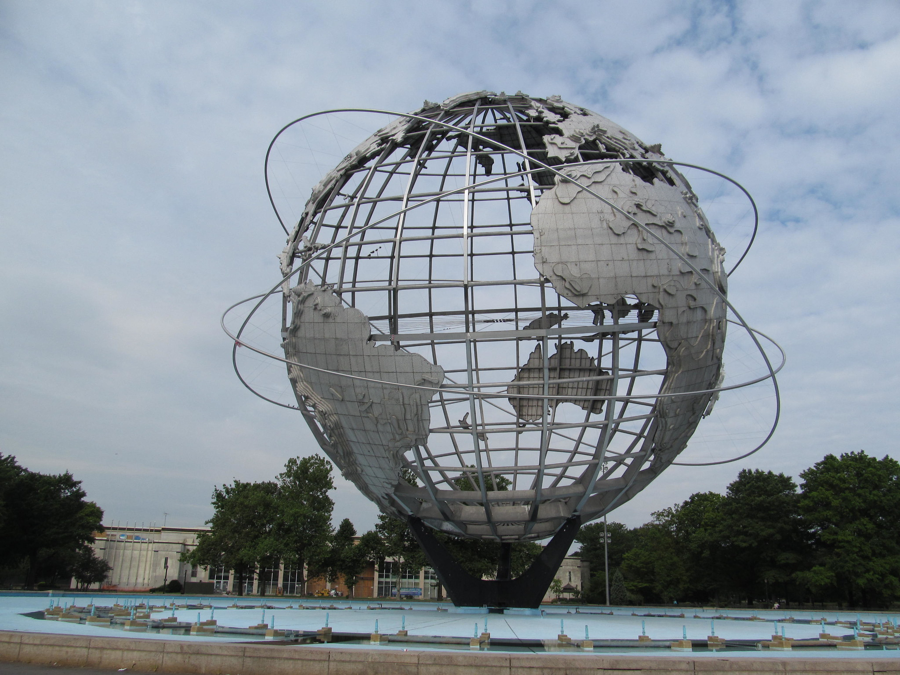
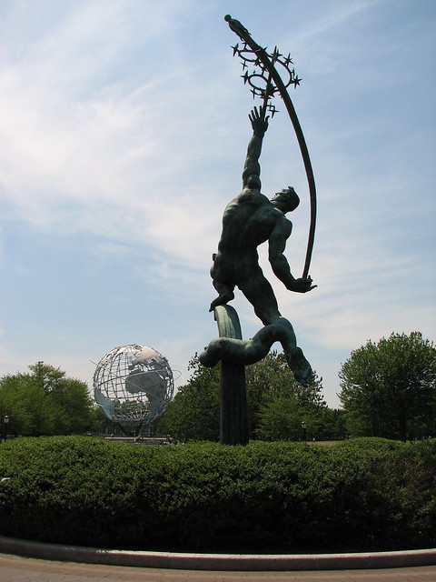

Queens

According to NYC The Official Quide "With adventurous art, international cuisine, gorgeous parks and world-class sporting events, Queens features attractions to satisfy nearly every taste. Sports lovers can watch the New York Mets play baseball at Citi Field and, in a venue nearly adjacent, see the US Open host the world’s best tennis players. But in Queens, every day can be an event, whether you’re sampling the delectable Greek cuisine of Astoria or authentic Chinese food in Flushing. View inventive art at MoMA PS1 and Socrates Sculpture Park in Long Island City, and take in the stunning flora at the Queens Botanical Garden."
Flushing Meadows Corona Park
 "Flushing Meadows Corona Park - New York". Doug Kerr. Flickr.comAccording to NYC The Official Quide "The largest park in Queens (and fourth largest park in all of New York City) has something for jocks, artists, nature lovers and the technologically inclined: green recreational spaces for baseball, soccer and cricket; playgrounds; skateboarding areas; handball courts; dog runs; the Queens Museum; the New York Hall of Science; the Queens Zoo; USTA Billie Jean King National Tennis Center (home of the US Open); and Citi Field, home to the Mets. A handful of features on the grounds are leftovers from world's fairs held here".
 "The Rocket Thrower". Chrisin Philly. Flickr.com